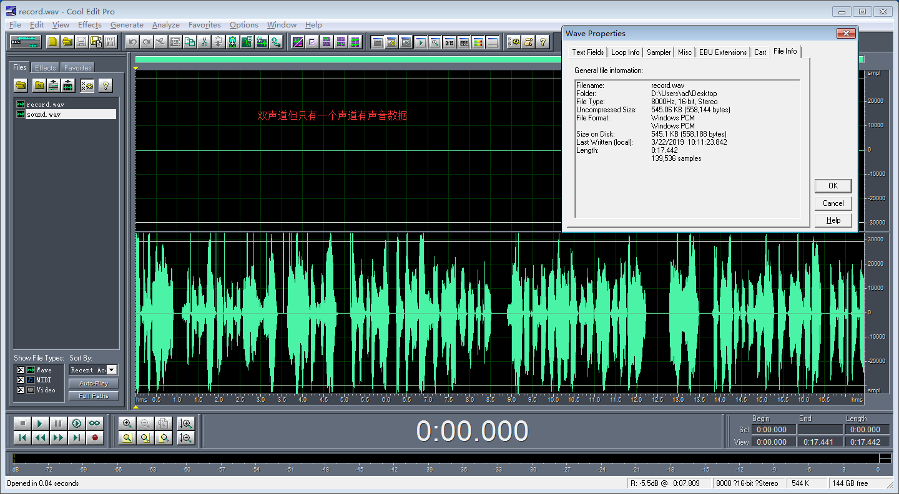
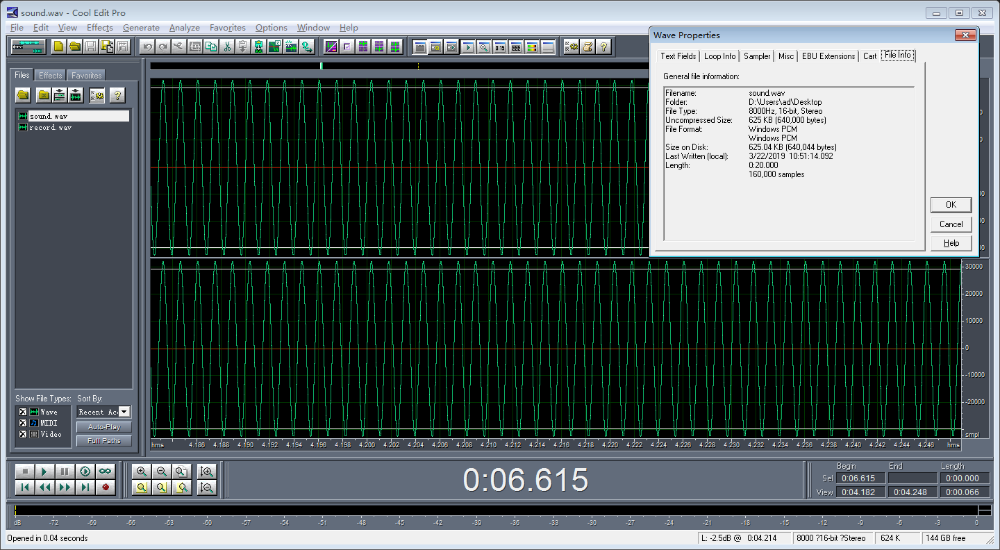

README
如何生成特定wav文件来测试声卡
参考文档
生成蓝牙声音源代码
源代码：wavfile
编译：
make生成声音：
./wavfile生成的文件
sound.wav是左右声道都有数据，其实只需要关注右声道数据就行了，BT数据传输只会关注右声道数据；
播放录音方法
删除
vendor/nxp-opensource/imx/alsa生成库，防止声卡被占用：rm /vendor/lib/hw/audio.primary.imx8.sorm /vendor/lib64/hw/audio.primary.imx8.so
录音：
tinycap record.wav -D 1 -r 8000 -b 16
播放：
tinyplay sound.wav -D 1
